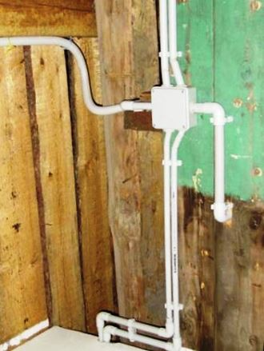

Качественный электромонтаж в Санкт-Петербурге и ленобласти, стаж 12 лет. Частный электрик, недорого и качественно.
Тел. 8 904 642 08 57 Николай.
Николай.

Монтаж проводки в трубах.
Что вы сегодня знаете о спецификации проведения электрических сетей в помещении? Цены ниже!
Конечно, же, как и многочисленное количество людей, все приблизительно предполагают, что электромонтаж - это обязательное наличие в доме блока бесперебойного питания, автоматов, розеток, выключателей и других предусмотренных инновационной технологией приборов.
Но, как известно, что на практическом примере существует немало важных факторов, которые отвечают за долговечность и высокое качество профессионального монтажа проводки в металлических трубах.
Сколько стоит монтаж проводки в трубах.
|
До 100 Метров. |
120 руб. |
|
До 200 Метров. |
100 |
|
от 200 Метров. |
80 руб. |
Выделим основные требования к проведению электрических кабелей в специальных трубах.
В каких случаях монтируем электропроводку в трубах.
В первую очередь, профессиональный монтаж проводки в трубах, требуется по весьма резким основаниям. Это может быть специфическое помещение с повышенной влажностью, это могут быть всевозможные труднодоступные места на территории положения электрического провода.
Во вторую очередь, пластмассовые или стальные трубы применят в случаях, когда внешняя среда грозит кабелю и другому оборудованию грозит механическим повреждением.
В третью очередь, монтаж в трубах выполняют обязательно в случае ранее установленной рекомендации в технической документации проекта здания или сооружения.
В четвертую очередь, преимущественная особенность прокладки электрического кабеля разного вида в трубах - это то, что данный тип электромонтажа может быть произведен, как на наружной, так и на внутренней территории.
И, наконец-то, в пятую очередь, перед монтажом проводки в трубах, четко проверяется состояние расходуемого строительного материала, что на 100% гарантирует полную защиту кабеля от загрязнения, коррозии и т.п.
Наша бригада мастеров в СПБ и ее ближайшей области, выполняет на исключительно высококачественном уровне все виды сложности электромонтажных работ, в том числе и в пластмассовых (гофрированных), а также стальных трубах.
Правила монтажа проводки в трубах.
На данный момент стоит вопрос о скоропостижном монтаже проводки в трубах, следует учесть тот факт, что к этому типу электропроводки существует многочисленное количество требований, не соблюдение которых грозит непредсказуемой ситуацией. Например: не запустится новое оборудование, перегорание электрического кабеля, ведь монтаж электропроводки в трубах может быть сделан специально, как для помещения или улицы, так и для соответствующего и качественного обслуживания трубопровода, газопровода и ряд других целесообразных факторов, которые рекомендуют специалисты. На самом деле, к счастью благодаря инновационным технологиям и научно-технической литературы, все требования к профессиональному, а это значит, к долговечному качеству лежит в уже издавна установленной стандартизации ГОСТ, СНиП и другие необходимые расчеты.
Сплоченная команда - бригада мастеров, выполняет работу не только в кратчайшие сроки, обусловленные конкретными датами, но и, конечно, же, несет ответственность и непосредственно дает гарантию на выполненную работу электромонтажных работ в трубах под ключ.
Преимущество бригады мастеров электриков.
Непременно, хочется напомнить, что основным методом успеха безотрывного производства, является то, что стоимость монтажа проводки в трубах недорого - это совсем нехороший вариант с привычным для вас принципом проведения электрических сетей. То есть, для данного специфического типа электропроводки, считается дополнительное приобретение расходного материала, такого как трубы. Именно сейчас мы с уверенностью может сказать, что за нами сложную проделанную работу, даже не стоит проверять. Мы знает все первостепенные тонкости производимого дела и все необходимые детали, которые отвечают за надежность эксплуатации, независимо от напряжения в сети, эргономичности при беспрерывном использовании на производстве или в обычном доме, долгосрочности работы, только так чтобы даже превышала сроки гарантийного обслуживании, указанного в технической документации.
Речь идет о том, что будущий электрический трубопровод рекомендуют прокладывать ниже систем отопления, ни в коем случае не сгибать гофрированную трубу на угол менее чем 90 - это может повлечь за собой перегиб кабеля, который повлечет скоропостижную поломку.
Все это конечно, хорошо, но тут присутствует важных факторов, которые, просто-напросто, нельзя выпускать из виду. К примеру: монтаж проводки в трубах можно производить использую не изолированный кабель, но существует ряд ограничений к ним, которые для данных целей использовать не безопасно.
Почему мы.
Итак, сегодня вы ищите качественные и недорогие услуги по монтажу электрических кабелей и другого оборудования в пластмассовых или металлических трубах. Но до сих пор не знаете, куда обратиться за настоящей квалифицированной помощью. Спешим сообщить вам, самое приятное на сегодня известие от конкурентоспособной бригады мастеров: мы выполняем заказы исключительно по согласованию цены на эти или какие-либо другие дополнительные услуги. Не повышаем стоимость работы в процессе монтажа проводки в трубах.

Сколько будут стоить материалы.
Расценки на электропроводку.

Замена электропроводки в двухкомнатной квартире?.
Сколько стоит сделать внутреннюю проводку?.
Установка люстр и светильников.
Электромонтаж проводов в бане.